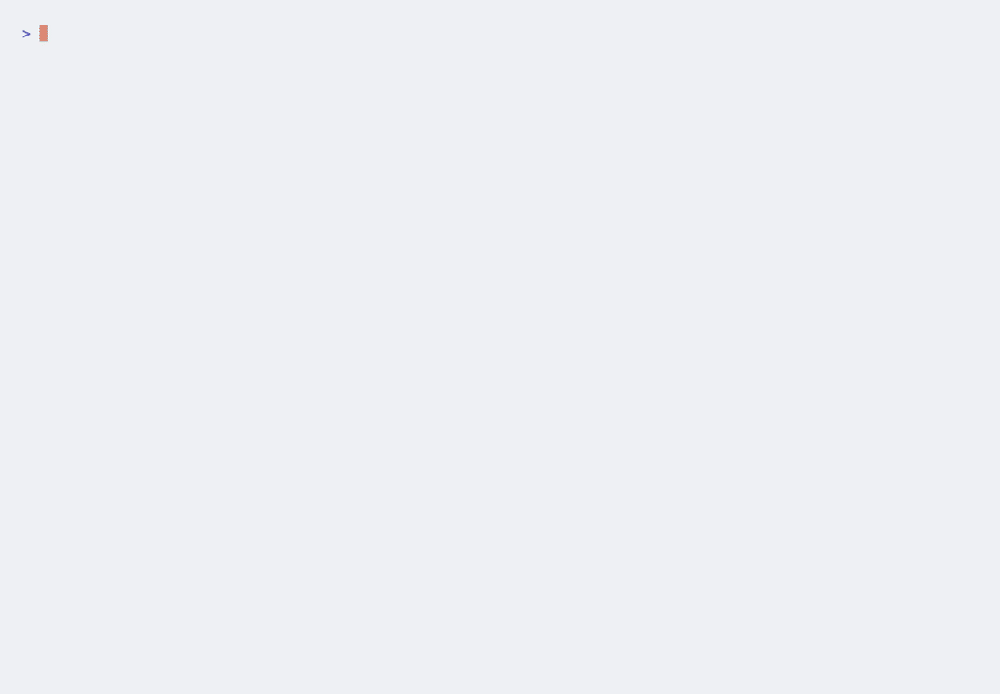

SkillCI tests, scores, and gates changes to your skills, hooks, rules, and
CLAUDE.md — before you trust them in Claude Code, Cursor, or Codex.

Yet teams ship changes to the configuration that steers their coding
agents on vibes, with zero testing. A new line in a shared CLAUDE.md can quietly
make the agent slower, pricier, or worse — and nobody notices for weeks. Agent config is a
production artifact now. SkillCI is regression testing for it.
Run a task suite twice — once per config — drive a real agent headlessly, score each run three ways, compare, and gate.
┌─ baseline config ─┐ ┌──────────┐
tasks ──▶│ ├─▶ run agent ─▶ score ─┤ compare ├─▶ VERDICT
└─ candidate config ┘ (sandboxed) └──────────┘ improved /
neutral /
regressedObjective correctness dominates, the LLM judge refines it, and cost nudges.
Deterministic pass/fail: command exit codes, file existence & contents, test suites, expected diffs.
Rubric-scored quality for what objective checks can't capture. Runs via the Anthropic SDK or the claude CLI.
Tokens, tool calls, steps, wall-clock — a relative bonus or penalty vs. the baseline run.
Offline and deterministic to start — then live on your Claude subscription, no API key.
# 1. Install & run the offline demo (no network, no keys) npm install npm run demo # 2. Build, then evaluate a real config change — live npm run build node dist/cli/index.js run \ --agent claude-code \ --baseline ./config/baseline \ --candidate ./config/candidate
regressed.
The agent runs via claude -p; the judge does too when no ANTHROPIC_API_KEY is set.| Agent | Artifacts | Headless invocation |
|---|---|---|
| Claude Code | skills, hooks, slash commands, CLAUDE.md, settings | claude -p … --output-format json |
| Cursor | .cursor/rules/*.mdc, .cursorrules | cursor-agent (best-effort) |
| Codex | AGENTS.md / codex config | codex exec |